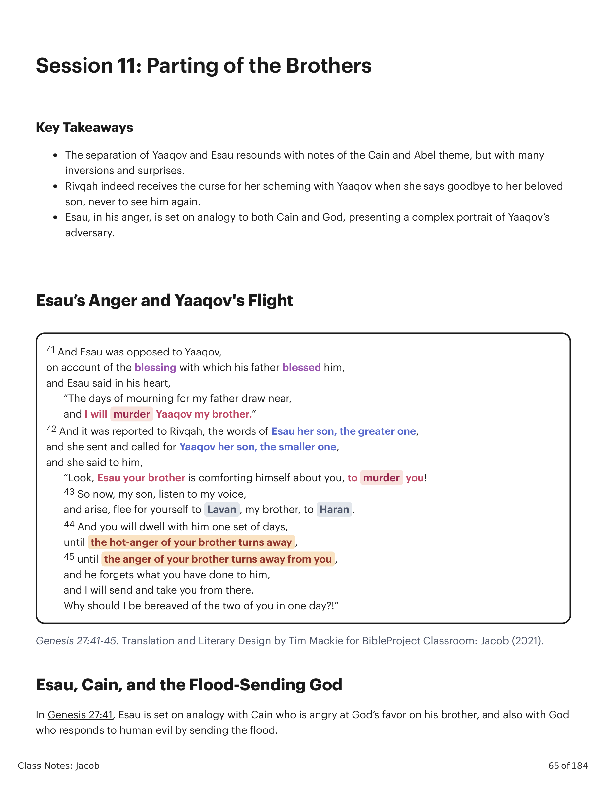
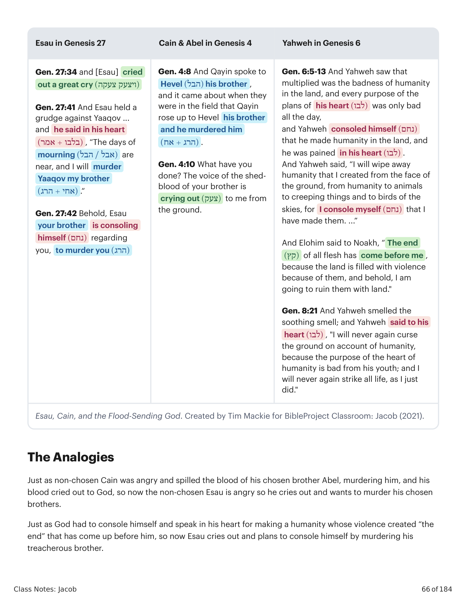
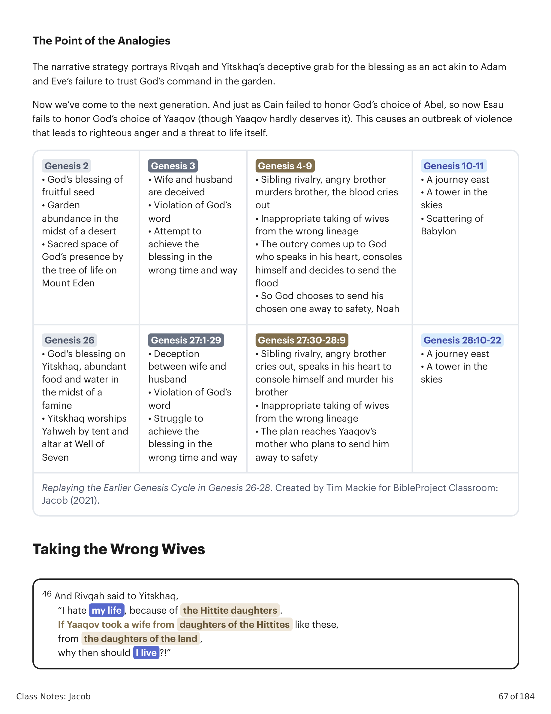
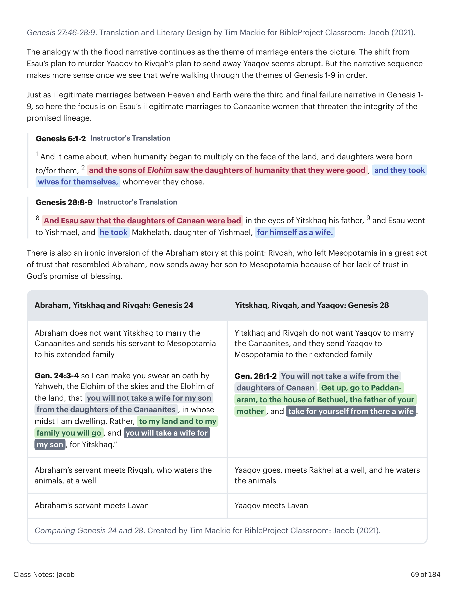

41 E Esaú foi hostil a Yaaqov, por causa da bênção com que seu pai o abençoara, e Esaú disse em seu coração: "Os dias de luto por meu pai se aproximam, e murderarei Yaaqov meu irmão." 42 E foi relatado a Rivqah, as palavras de Esaú seu filho, o mais velho, e ela enviou e chamou Yaaqov seu filho, o menor, e disse-lhe: "Eis que Esaú teu irmão se consola a teu respeito, para te murderar! 43 Agora, pois, meu filho, ouve a minha voz, e levanta-te, foge para Lavan, meu irmão, a Harã. 44 E habitarás com ele por um tempo, até que o furor de teu irmão se desvie, 45 até que a ira de teu irmão se desvie de ti, e ele esqueça o que lhe fizeste. E eu enviarei e te tomarei de lá. Por que seria eu desfilhada de vós ambos num só dia?!"41 And Esau was opposed to Yaaqov, on account of the blessing with which his father blessed him, and Esau said in his heart, "The days of mourning for my father draw near, and I will murder Yaaqov my brother." 42 And it was reported to Rivqah, the words of Esau her son, the greater one, and she sent and called for Yaaqov her son, the smaller one, and she said to him, "Look, Esau your brother is comforting himself about you, to murder you! 43 So now, my son, listen to my voice, and arise, flee for yourself to Lavan, my brother, to Haran. 44 And you will dwell with him one set of days, until the hot-anger of your brother turns away, 45 until the anger of your brother turns away from you, and he forgets what you have done to him, and I will send and take you from there. Why should I be bereaved of the two of you in one day?!"

Gênesis 27:41-45. Tradução e Design Literário por Tim Mackie para BibleProject Classroom: Jacó (2021).Genesis 27:41-45. Translation and Literary Design by Tim Mackie for BibleProject Classroom: Jacob (2021).
Em Gênesis 27:41, Esaú é posto em analogia com Cainã, que se ira contra o favor de Deus sobre seu irmão, e também com Deus, que responde ao mal humano enviando o dilúvio. Assim como o não-escolhido Cainã se irou e derramou o sangue de seu irmão escolhido Abel, murderando-o, e seu sangue clamou a Deus, agora o não-escolhido Esaú se ira, clama e quer murderar seus irmãos escolhidos. Assim como Deus teve de se consolar e falar em seu coração por haver feito uma humanidade cuja violência criou "o fim" que veio diante dele, agora Esaú clama e planeja se consolar murderando seu irmão traiçoeiro.In Genesis 27:41, Esau is set on analogy with Cain who is angry at God's favor on his brother, and also with God who responds to human evil by sending the flood. Just as non-chosen Cain was angry and spilled the blood of his chosen brother Abel, murdering him, and his blood cried out to God, so now the non-chosen Esau is angry so he cries out and wants to murder his chosen brothers. Just as God had to console himself and speak in his heart for making a humanity whose violence created "the end" that has come up before him, so now Esau cries out and plans to console himself by murdering his treacherous brother.

Esaú, Cainã e o Deus que Envia o Dilúvio. Criado por Tim Mackie para BibleProject Classroom: Jacó (2021).Esau, Cain, and the Flood-Sending God. Created by Tim Mackie for BibleProject Classroom: Jacob (2021).
A estratégia narrativa retrata a investida enganosa de Rivqah e Yitskhaq pela bênção como um ato semelhante à falha de Adão e Eva em confiar no mandamento de Deus no jardim. Agora chegamos à próxima geração. E assim como Cainã falhou em honrar a escolha de Deus por Abel, agora Esaú falha em honrar a escolha de Deus por Yaaqov (embora Yaaqov mal o mereça). Isso causa um surto de violência que leva a uma ira justa e a uma ameaça à própria vida.The narrative strategy portrays Rivqah and Yitskhaq's deceptive grab for the blessing as an act akin to Adam and Eve's failure to trust God's command in the garden. Now we've come to the next generation. And just as Cain failed to honor God's choice of Abel, so now Esau fails to honor God's choice of Yaaqov (though Yaaqov hardly deserves it). This causes an outbreak of violence that leads to righteous anger and a threat to life itself.

Reencenando o Ciclo Anterior de Gênesis em Gênesis 26-28. Criado por Tim Mackie para BibleProject Classroom: Jacó (2021).Replaying the Earlier Genesis Cycle in Genesis 26-28. Created by Tim Mackie for BibleProject Classroom: Jacob (2021).
46 E Rivqah disse a Yitskhaq: "Odiei a minha vida, por causa das filhas hititas. Se Yaaqov tomar uma mulher das filhas das hititas como estas, das filhas da terra, por que então viveria eu?!" 28:1 E Yitskhaq chamou a Yaaqov, e o abençoou e lhe deu ordem, e disse-lhe: "Não tomarás mulher das filhas de Canaã. 2 Levanta-te, vai a Padã-Arã, à casa de Betuel, pai de tua mãe, e toma para ti dali uma mulher, das filhas de Lavan, irmão de tua mãe. 3 E El-Shadai, que ele te abençoe, e te faça frutificar e te multiplique, e te faça uma assembleia de povos, 4 e te dê a bênção de Abraão, a ti e à tua semente contigo, para que possuas a terra de tuas migrações, que Elohim deu a Abraão." 5 E Yitskhaq enviou Yaaqov, e ele foi a Padã-Arã, a Lavan, filho de Betuel, o arameu, irmão de Rivqah, mãe de Yaaqov e Esaú. 6 E Esaú viu que Yitskhaq abençoara a Yaaqov, e que o enviara a Padã-Arã para tomar para si mulher dali, e que lhe ordenara: "Não tomarás mulher das filhas de Canaã." 8 E Esaú viu que as filhas de Canaã eram más aos olhos de Yitskhaq seu pai, 9 e Esaú foi a Ismael, e tomou Makelate, filha de Ismael, filho de Abraão, irmã de Nebaiote, além de suas mulheres, para si por mulher.46 And Rivqah said to Yitskhaq, "I hate my life, because of the Hittite daughters. If Yaaqov took a wife from daughters of the Hittites like these, from the daughters of the land, why then should I live?!" 28:1 And Yitskhaq called to Yaaqov, and he blessed him and he commanded him, and he said to him, "You will not take a wife from the daughters of Canaan. 2 Arise, go to Paddan-aram, to the house of Bethuel, the father of your mother, and take for yourself from there a wife, from the daughters of Lavan, brother of your mother. 3 And El-Shadday, may he bless you, and may he make you fruitful and may he bless you and may you become an assembly of peoples, 4 and may he give to you the blessing of Abraham, to you and to your seed with you, so you can possess the land of your migrations which Elohim has given to Abraham." 5 And Yitskhaq sent Yaaqov away, and he went to Paddan-aram, to Lavan, son of Bethuel the Aramean, brother of Rivqah, mother of Yaaqov and Esau. 6 And Esau saw that Yitskhaq had blessed Yaaqov, and that he sent him to Paddan-aram, to take for himself a wife from there, when he blessed him, and that he commanded him, saying, "You will not take a wife from the daughters of Canaan," 8 And Esau saw that the daughters of Canaan were bad in the eyes of Yitskhaq his father, 9 and Esau went to Yishmael, and he took Makhelath, daughter of Yishmael, for himself as a wife.
A analogia com a narrativa do dilúvio continua à medida que o tema do casamento entra em cena. Assim como casamentos ilegítimos entre Céu e Terra foram a terceira e final narrativa de falha em Gênesis 1-9, aqui o foco está nos casamentos ilegítimos de Esaú com mulheres cananitas que ameaçam a integridade da linhagem prometida. Há também uma inversão irônica da história de Abraão neste ponto: Rivqah, que deixou a Mesopotâmia em um grande ato de confiança que lembrava Abraão, agora envia seu filho à Mesopotâmia por sua falta de confiança na promessa de bênção de Deus.The analogy with the flood narrative continues as the theme of marriage enters the picture. Just as illegitimate marriages between Heaven and Earth were the third and final failure narrative in Genesis 1-9, so here the focus is on Esau's illegitimate marriages to Canaanite women that threaten the integrity of the promised lineage. There is also an ironic inversion of the Abraham story at this point: Rivqah, who left Mesopotamia in a great act of trust that resembled Abraham, now sends away her son to Mesopotamia because of her lack of trust in God's promise of blessing.

Comparando Gênesis 24 e 28. Criado por Tim Mackie para BibleProject Classroom: Jacó (2021).Comparing Genesis 24 and 28. Created by Tim Mackie for BibleProject Classroom: Jacob (2021).
Por que os autores bíblicos conectariam a ira de Esaú à própria ira de Deus sobre o clamor antes do dilúvio?Why would the biblical authors connect Esau's anger to God's own anger over the outcry before the flood?